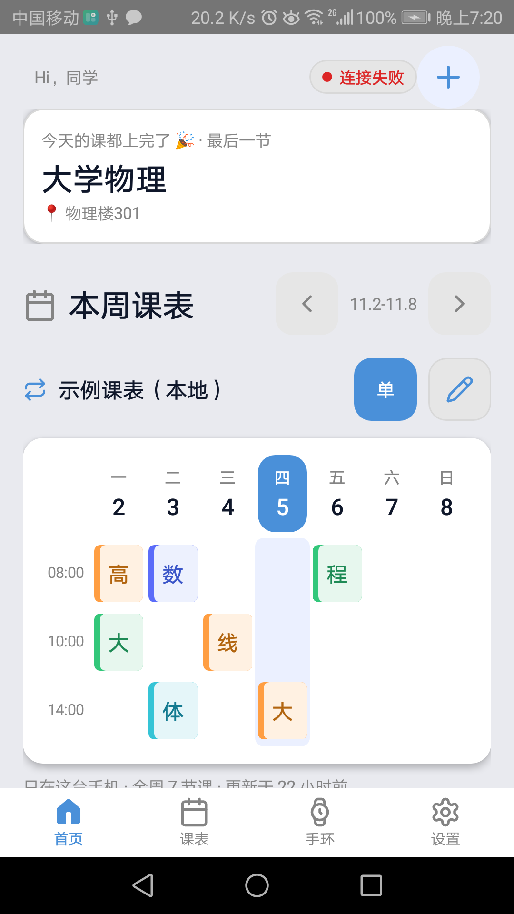
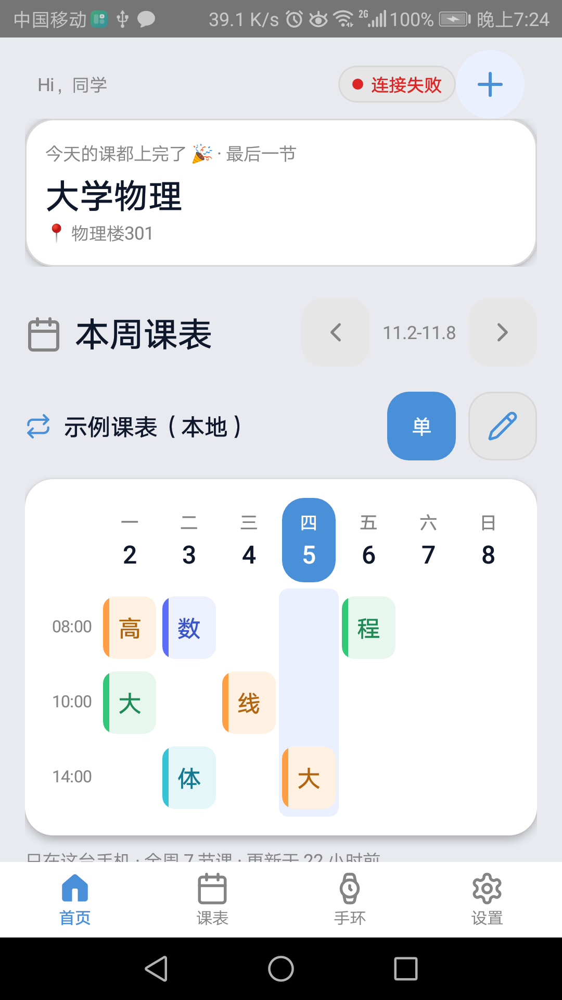
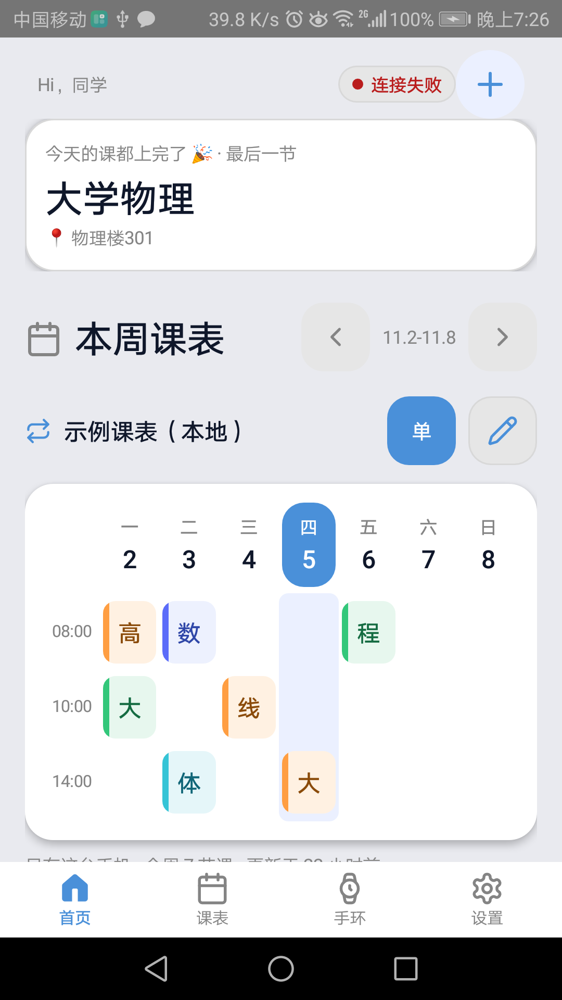
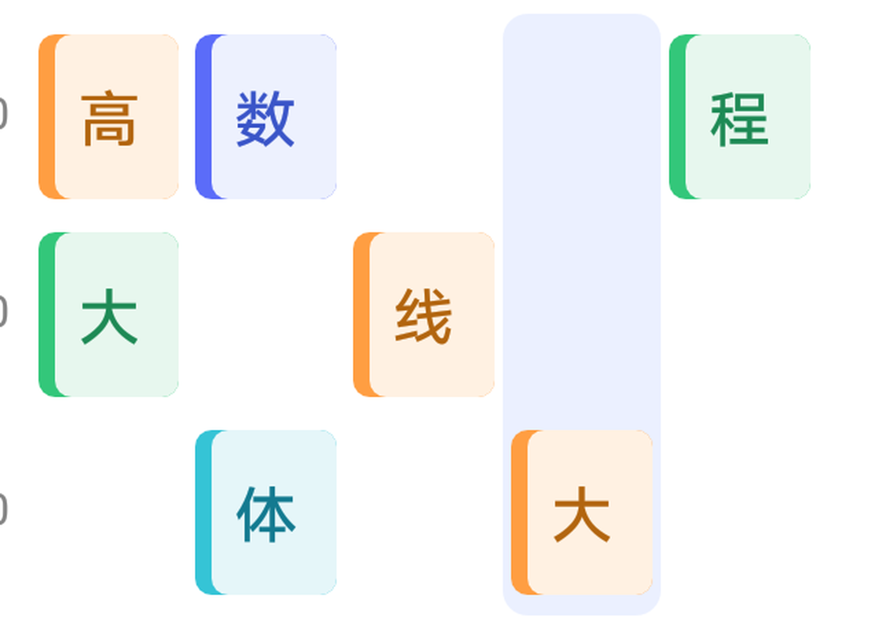
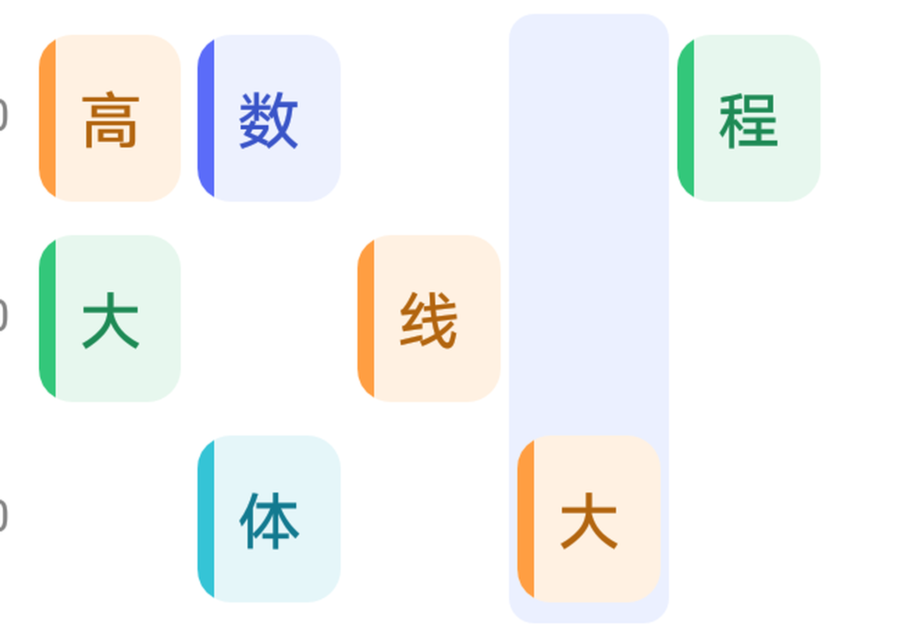
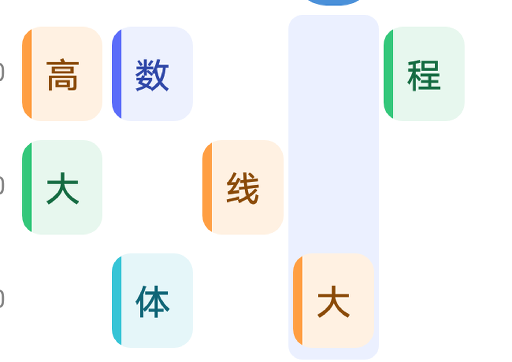

真机实拍 · 非设计稿 1080 × 1920 · BTF4C17222009588 2026-11-05 19:20–19:27 +0800 规范附录 D · 「真机截图比对铁律」第一份验收材料
Ui.courseBlockBg() 用 LayerDrawable 叠了两张各自带四角圆角的
GradientDrawable，面层左内缩 4dp 后它的左上/左下圆角把色条端头咬掉，底层色条自身也被大圆角切出斜边。
v1.3 改为 CourseBlockDrawable：色条 = 左侧矩形 ∩ 卡片圆角轮廓（Path.op(INTERSECT)），
端头严格沿圆角收口。下面三列全部是同一台真机、同一页、同一滚动位置的 adb screencap 实拍。
迭代 1 = 修刺头 + 圆角 + 字重；最终 = 再加配色 AA + 阴影 + 字号行高。每轮都编译、adb install -r -g、重新截图。

色条两端刺头 · 白卡 + 1dp 描边 · 圆角偏方
刺头消失 · 圆角柔和 · 字重分层
轻阴影卡片 · 标题层级更强 · 课名深字达 AA≤8dp 的细节必须放大看，整页缩略图会骗人。这是本次验收的核心证据。

两端各一个刺头
端头无缺口、无尖角、无溢出
几何正确 + 文字对比度达标| 维度 | 改前 | v1.3 改后 | 真机证据 |
|---|---|---|---|
| 配色 | 7 色 ink 里绿 3.93:1 / 橙 3.98:1 / 青 4.48:1 未达 AA；浅色 WARN 2.15:1、OK 3.30:1 几乎看不清 |
7 色 ink 全压到 5.90–7.62:1；OK/WARN/ERR → #146B41 / #8A4A08 / #B91C1C（白卡 ≥6.4:1） |
课名更清晰 |
| 字体 / 字重 | Ui.text(..., bold=true) 走 Typeface.BOLD：中文伪粗体、发糊发硬 |
统一走 sans-serif-medium 真字重，一处改动全站生效，页面零改动 |
标题变柔和 |
| 字号 | SP_DISPLAY 22 / SP_TITLE 17 |
24 / 18，大标题与分区标题层级拉开；正文 / 课名档不动，紧凑布局不回归 |
无截断 |
| 行高 | 只有 Ui.textLh* 设行高，Ui.text() 默认路径中文挤成一团 |
新增 lineHeightFor(sp)，Ui.text() 默认按字号套 LH_* 阶梯；单行测量高度不变 |
无溢出 |
| 圆角 | R_CARD / R_CTRL / R_BLOCK = 14 / 12 / 4 |
18 / 14 / 8，配合色条沿圆角裁剪，去掉方盒子感 |
卡片更柔和 |
| 阴影 | Ui.card() 白卡 + 1dp 灰描边 + 0 elevation；elevation 散落 3/4/6/8dp |
浅色用 E1 轻阴影替代描边，cardElevated() 收敛到 E2；深色保留细描边（投影不可见）；校验脚本拦新增数字字面量 |
平面感消失 |
| 色对 | 改前 | v1.3 | 判定 |
|---|---|---|---|
| 绿 ink / 浅绿底 | 3.93:1 | 5.90:1 | AA 达标 |
| 橙 ink / 浅橙底 | 3.98:1 | 6.18:1 | AA 达标 |
| 青 ink / 浅青底 | 4.48:1 | 6.00:1 | AA 达标 |
| 蓝 / 紫 / 粉 / 红 ink | 5.42–5.62:1 | 6.30–7.62:1 | 一并压暗统一 |
WARN / 白卡 | 2.15:1 | 6.85:1 | AA 达标 |
OK / 白卡 | 3.30:1 | 6.54:1 | AA 达标 |
apk/build.sh 各约 7s，产物 EVSyncProbe-v0.6.6.apk / -v0.6.7.apk（均 527942 B）。adb -s BTF4C17222009588 install -r -g 均 Success，dumpsys 最终 versionName=0.6.7。tools/check-ui-spec.py 新增行 0 硬违规；elevation 新规则四探针 ALL PASS。cmd uimode night yes 在这台 EMUI 真机上返回成功，但 App 仍是白卡浅底（WatchAppearance 本地主题覆盖系统夜间模式）。按铁律明确标注未验证，不拿附录 A 的深色模拟图冒充实拍。0.6.0 / code183；version.env 已被两次构建 bump 到 0.6.8 / 190。Ui.java 一个源文件；措辞未做专项试点（按 Tom 本轮要求降为二级任务）；工作区里另一会话的首页表头 WIP 有活跃认领，只读不碰、不代发。evtask-D-evev-schedul-261105-8bysct ·
截图归档 apk/shots/ev-ui-android-v1.3-*.png